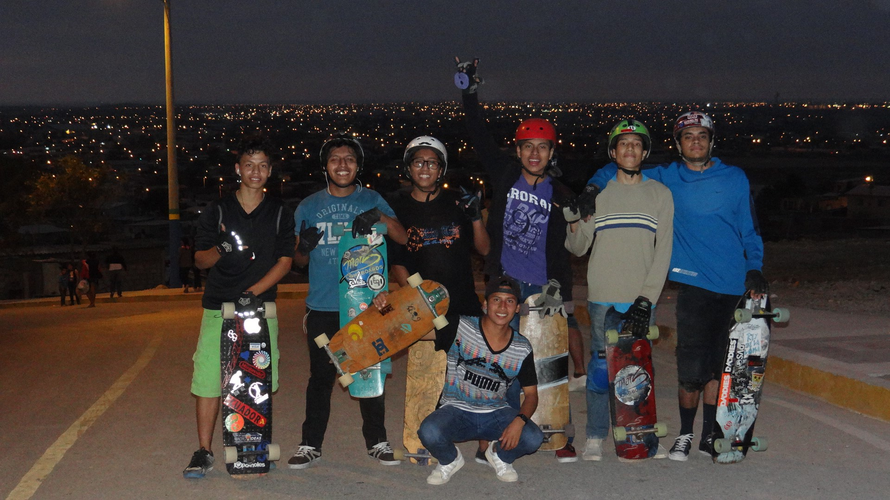

Como surgio el deporte longboard
El longboard es una variante del skateboard que se caracteriza por tener una tabla más larga y ruedas más grandes. Su origen se remonta a la década de 1950 en California, Estados Unidos. Aunque la historia específica puede variar según las fuentes, se cree que el longboard surgió como una evolución natural del skateboard. En la década de 1950, el skateboard empezó a ganar popularidad como una actividad recreativa y deportiva. Sin embargo, algunos aficionados al skateboard buscaban nuevas formas de experimentar con este deporte, y comenzaron a utilizar tablas más largas para obtener mayor estabilidad y control durante la conducción. Estas tablas más largas se convirtieron en la base del longboard.
El longboard es una variante del skateboard que se caracteriza por tener una tabla más larga y ruedas más grandes. Su origen se remonta a la década de 1950 en California, Estados Unidos. Aunque la historia específica puede variar según las fuentes, se cree que el longboard surgió como una evolución natural del skateboard. En la década de 1950, el skateboard empezó a ganar popularidad como una actividad recreativa y deportiva. Sin embargo, algunos aficionados al skateboard buscaban nuevas formas de experimentar con este deporte, y comenzaron a utilizar tablas más largas para obtener mayor estabilidad y control durante la conducción. Estas tablas más largas se convirtieron en la base del longboard.
El longboard es una variante del skateboard que se caracteriza por tener una tabla más larga y ruedas más grandes. Su origen se remonta a la década de 1950 en California, Estados Unidos. Aunque la historia específica puede variar según las fuentes, se cree que el longboard surgió como una evolución natural del skateboard. En la década de 1950, el skateboard empezó a ganar popularidad como una actividad recreativa y deportiva. Sin embargo, algunos aficionados al skateboard buscaban nuevas formas de experimentar con este deporte, y comenzaron a utilizar tablas más largas para obtener mayor estabilidad y control durante la conducción. Estas tablas más largas se convirtieron en la base del longboard